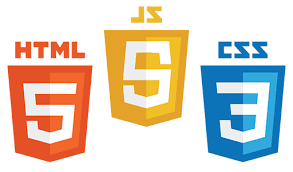
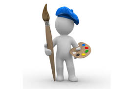
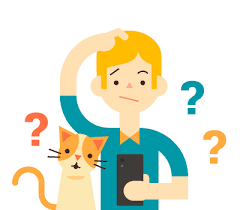

Выведите координаты мыши относительно блока в момент движения курсора мыши внутри блока. Координаты выводить под блоком.
___
Создайте блок div, в качестве изображения фона установите ему изображение закрытой папки. Добавьте событие, которое выполняется при двойном клике на блоке и заменяет фон блока на изображение открытой папки. *добавила при одном клике на этот же блок возврат к первой картинке
Добавьте в документ 300-400 блоков div квадратной формы с размерами сторон 30px, и цветом фона. Добавление элементов выполните с помощью цикла. Добавьте событие при наведении мыши, которое будет скруглять данные блоки с помощью border-radius до круга. (Для замедления эффекта скругления в CSS можно добавить transition).
Создайте div размерами ширина – 100%, высота 250px. Ниже добавьте 4-5 изображений с одинаковыми классами, разного размера. Добавьте событие, которое будет при клике на изображении устанавливать его фоном блока div со свойством background-size: contain.
  Создайте блок размерами 50x50px. Добавьте событие клик, так, что при каждом клике на блоке он отодвигается на 100px вниз от предыдущего положения.